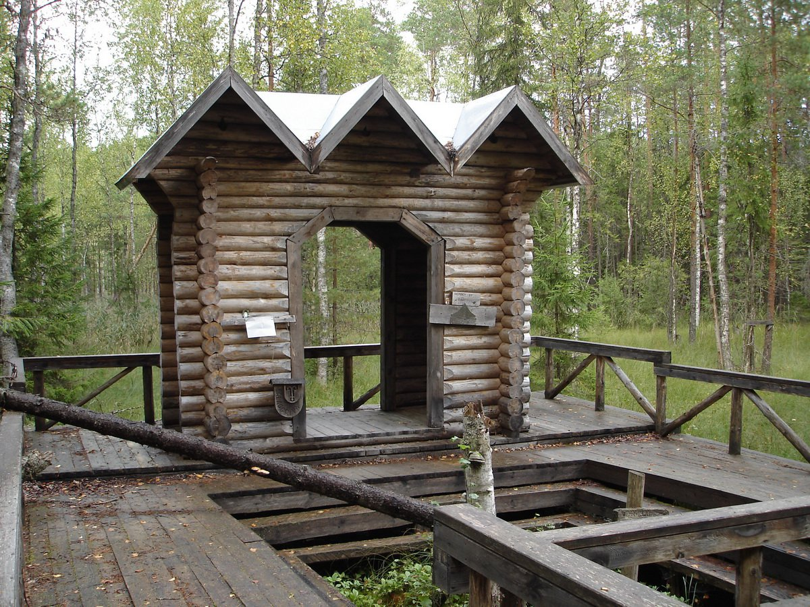
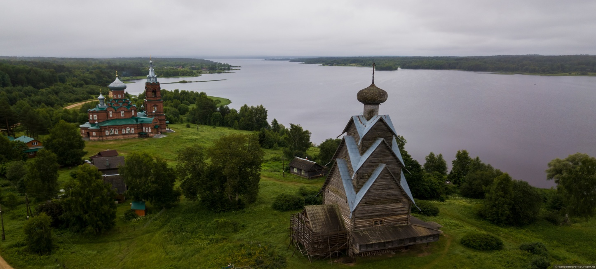

Пено
Исток Западной Двины
Исток Западной Двины. Памятник природы, Западная Двина берет начало на южной окраине Корякинского болота, в 1,5 км от озера Двинец.
Ново-Соловецкий остров на озере Вселуг. Ширков погост
К памятникам природы Пеновского района относится остров Ново-Соловецкий на озере Вселуг. Там в 1701 г. был основан мужской монастырь и построена церковь.
Особый интерес представляет Ширков погост на озере Вселуг. Здесь с глубокой древности существовали поселения и языческое капище. В конце ХIХ в. Ширков погост стал одним из крупных культовых центров. Здесь сохранилась уникальная древняя сорокаметровая деревянная церковь, которую называют «тверскими Кижами».